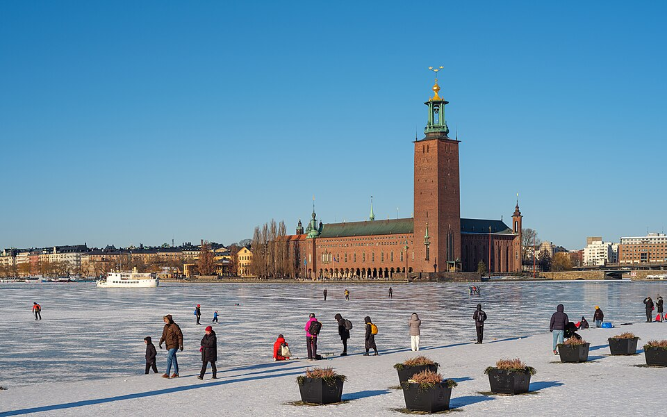
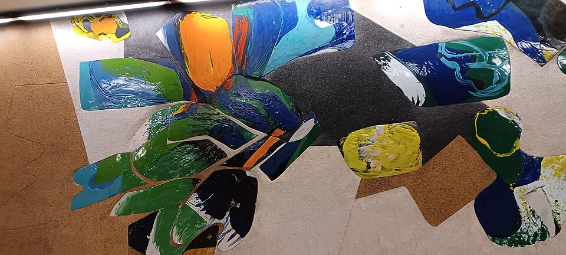

Informações
Conheça alguns dados históricos, geográficos e culturais de Estocolmo.

Uma cidade entre ilhas
Estocolmo foi construída sobre 14 ilhas ligadas por pontes, entre o lago Mälaren e o mar Báltico.

| Informações gerais | |||
|---|---|---|---|
| Categoria | Dado | Valor | Observação |
| Geografia | País | Suécia | Europa do Norte |
| Localização | Mar Báltico | Construída sobre 14 ilhas | |
| História | Fundação | 1252 | Origem medieval |
| Cultura | Museu Vasa | 1628 | Navio histórico preservado |
Curiosidades sobre Estocolmo
- É conhecida como a “Veneza do Norte”.
- A cidade tem mais de 50 pontes.
- O Museu Vasa guarda um navio de 1628.
- O metro tem estações decoradas como galerias de arte.
- Os prémios Nobel são entregues em Estocolmo.